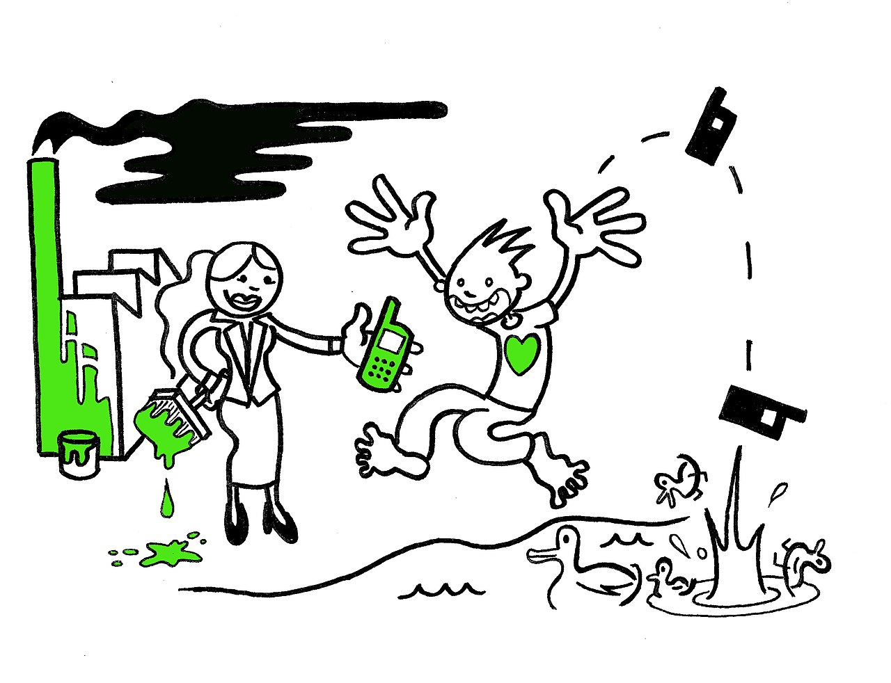

🪤 El engaño del Greenwashing
¿Alguna vez has comprado una camiseta porque la etiqueta era verde y ponía "100% Eco" o "Natural", pero en realidad estaba fabricada con materiales contaminantes? A esto se le llama Greenwashing (o lavado verde si lo traducimos al español).
📝 ¿Qué es el Greenwashing?
Se trata de una práctica que consiste en engañar al consumidor anunciando un producto o empresa como "ecológico" cuando en realidad no lo es.
- Las empresas que hacen greenwashing invierten su dinero en cambiar el marketing (pintar su logo de verde, usar palabras amables) en lugar de cambiar y limpiar realmente su forma de producción.
